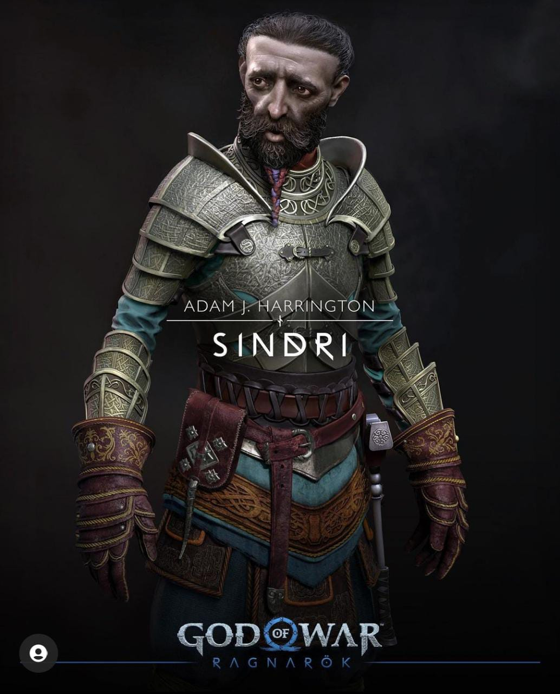
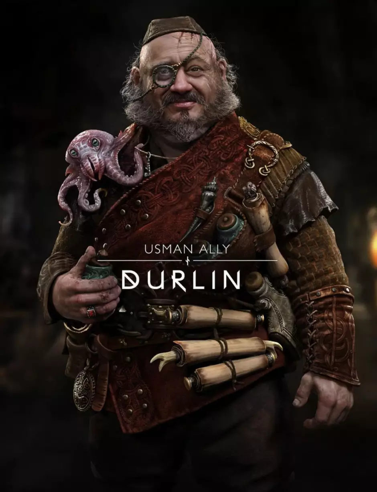
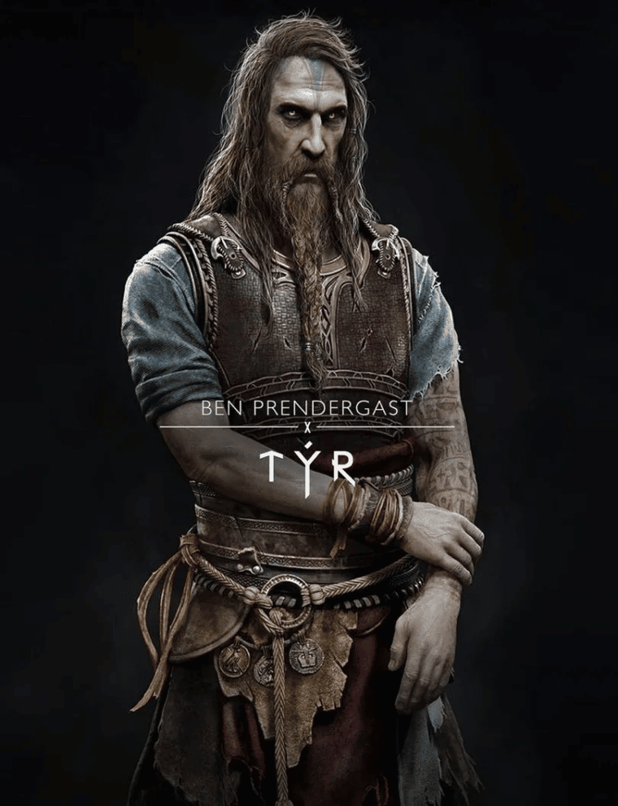
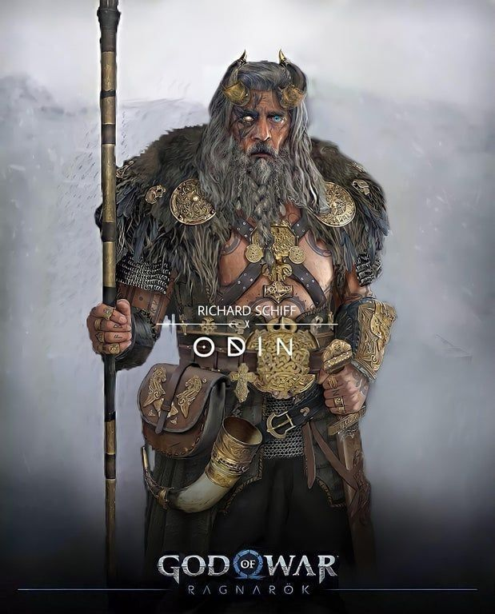

Qual é a história de God of War: Ragnarok?
God of War: Ragnarok, se passa três anos
após o evento do jogo de 2018, com Atreus um pouco mais velho enquanto tenta entender
suas origens e a importância de seu nome de batismo — Loki.
busca por respostas vai desencadear no auge do Ragnarok, o fim dos tempos Nórdicos.
Kratos irá auxiliar seu filho em sua jornada
explicações, acompanhado novamente da cabeça de Mimir. Em algum momento de sua busca
os personagens irão se encontrar com Tyr,
o Deus da Guerra Nórdico.
Ele foi mencionado no jogo anterior, onde todos acreditavam
que estava morto, mas que estava somente preso e será resgatado por Kratos — para ser um
aliado ou inimigo.
Com o Ragnarok se aproximando a guerra contra
Asgard será inevitável e novos inimigos estarão no caminho de Atreus. Um deles é Thor, que
já apareceu por um breve momento em uma cena pós-créditos do jogo anterior.
Mas rivais antigos também estão presente. Freya,
que jurou destruir Kratos e seu filho após derrotarem Baldur, estará de volta.
Anteriormente uma aliada, a personagem
nutre uma grande ira contra os protagonistas e fará de tudo para
vingar a morte de seu descendente.
PERSONAGENS
Kratos era um guerreiro espartano
que desde criança sempre teve um grande
talento para a
guerra por causa de suas origens divinas. Ele é um
semideus, filho de Zeus com uma mortal, mas não
sabia disso. Kratos tem um irmão gêmeo chamado Deimos,
cuja história é revelada em
God of War:
Ghost of Sparta.Atreus é filho de Kratos e Faye, uma Gigante da raça Jotun,
e está em busca de entender quem ele é e o que a linhagem da mãe significa para seu futuro.
uma vez, ele será um personagem companheiro no novo jogo, oferecendo flechas e invocações
mágicas como ajuda no combate.Ao lado de Thor, Freya é a outra vilã de Ragnarok. Ela foi introduzida no primeiro jogo e teve um papel importante na trama.
Agora, a personagem está em busca de vingança contra Kratos pela morte de Baldur, seu filho. Ela é uma guerreira que sabe lutar e usar a arte da magia dos Vanir, um clã de deuses poderosos.Mimir é o homem mais inteligente dos Nove Reinos e continua oferecendo conhecimento e informações para Kratos e Atreus enquanto é carinhosamente carregado no cinto do espartano.


Um dos personagens inéditos e mais esperados pelos fãs, Thor é o deus do trovão e filho de Odin, sendo responsável pelo quase extermínio dos Gigantes nos Nove Reinos.
Com o poderoso martelo Mjölnir, ele será um dos principais vilões da história por estar em busca de vingança contra Kratos pela morte de seus filhos, Magni e Modi.

 Qual é a história de God of War: Ragnarok?
God of War: Ragnarok, se passa três anos
Qual é a história de God of War: Ragnarok?
God of War: Ragnarok, se passa três anos